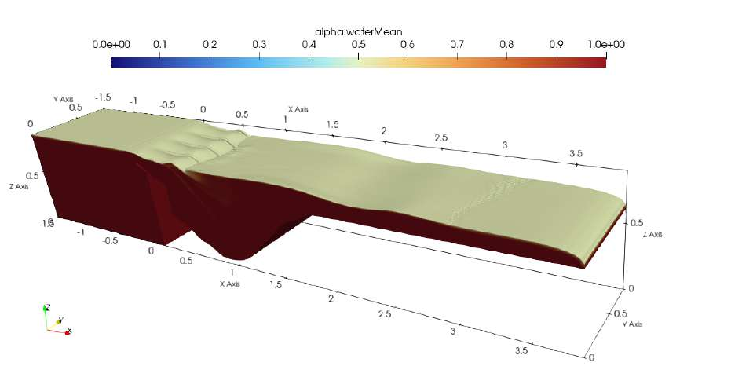

Air–water interface · OpenFOAMMaster’s thesis · TUM · 2026
Flow over Piano Key Weirs
How do weir geometry and downstream bed shape influence turbulent flow and bed shear stress?
OpenFOAMVOFk–ω SST
I investigated four configurations combining linear and non-linear outlet keys with flat and experimentally reconstructed scoured beds. The workflow covered meshing, parallel simulations, validation and time-averaged flow analysis.
Methods and findings
Discharge-coefficient differences from experiments were 7.35% and 4.20% for the flat-bed cases. The prescribed scour cavities produced recirculating flow and lower overall bed shear stresses within the cavities. Sediment transport and evolving erosion were not simulated directly.
Thesis grade: 1.3 in the German grading system. Host: TUM Chair of Hydraulic Engineering.